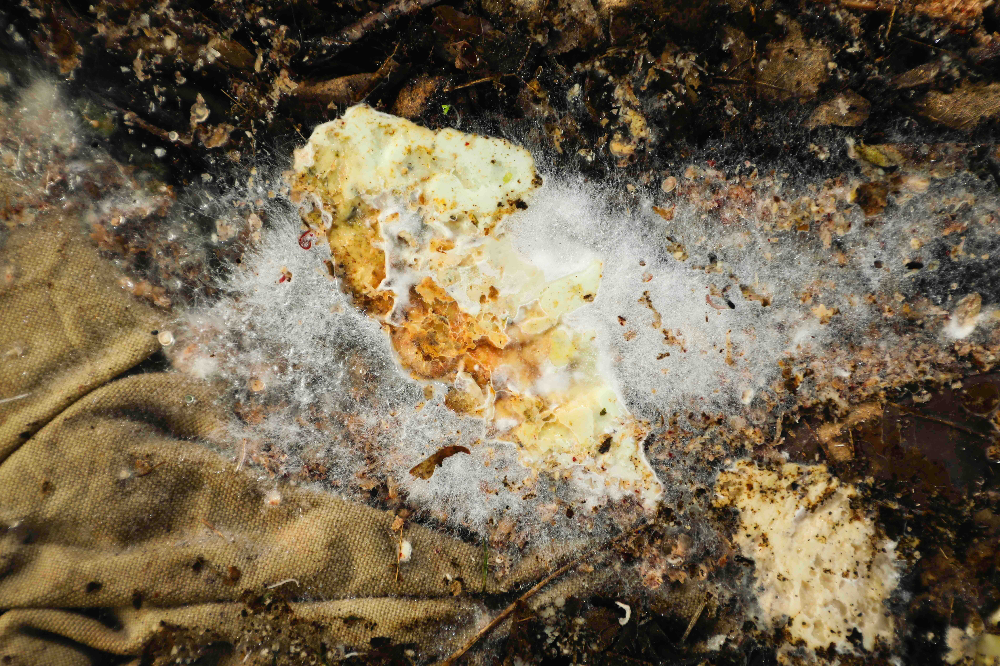
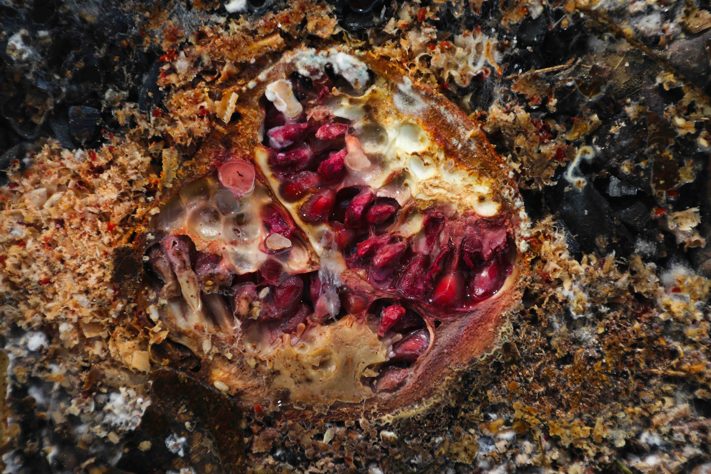
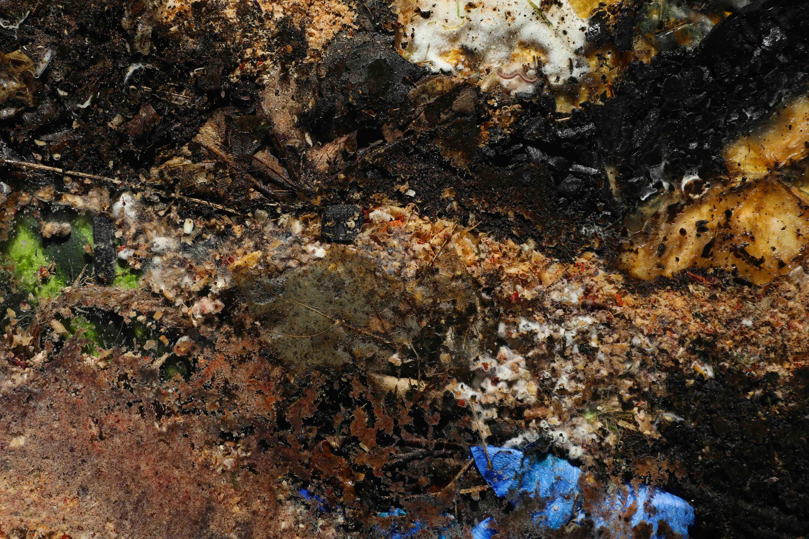
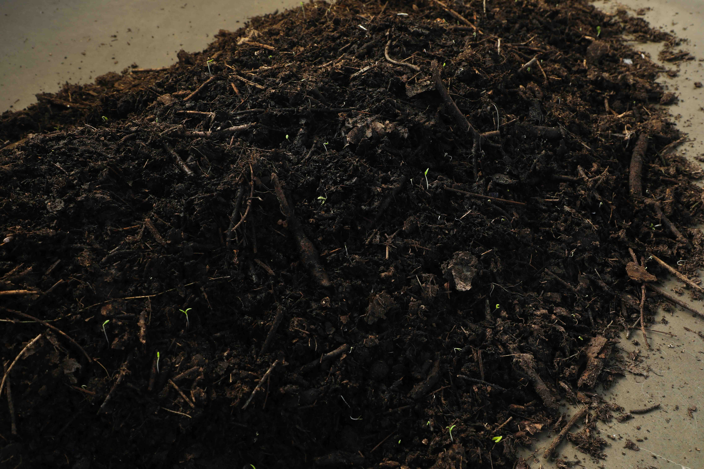
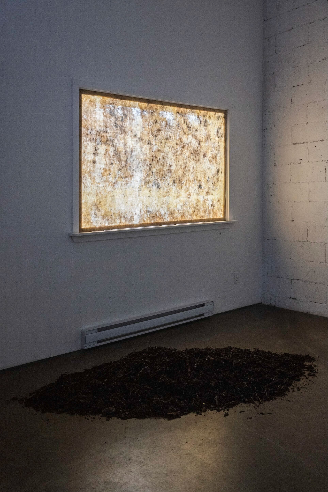
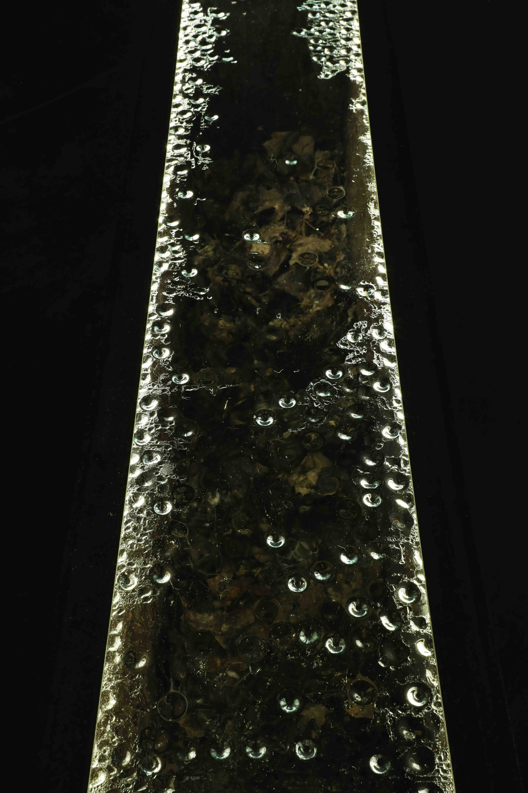
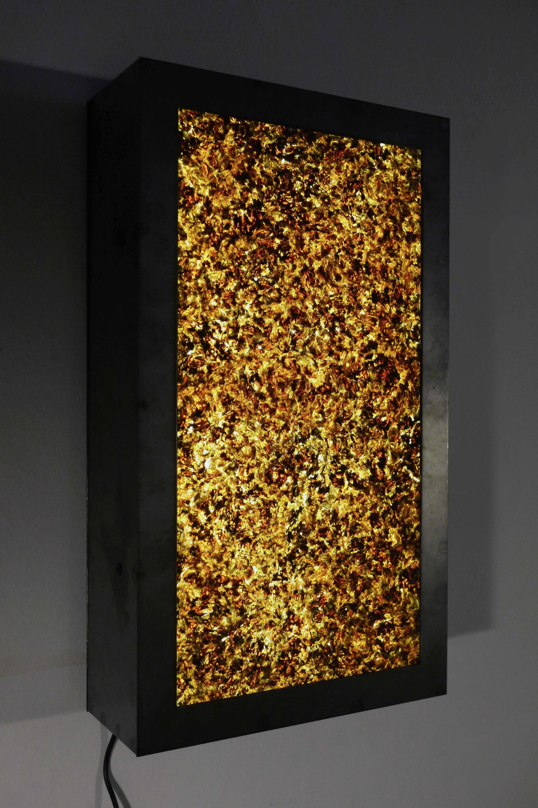
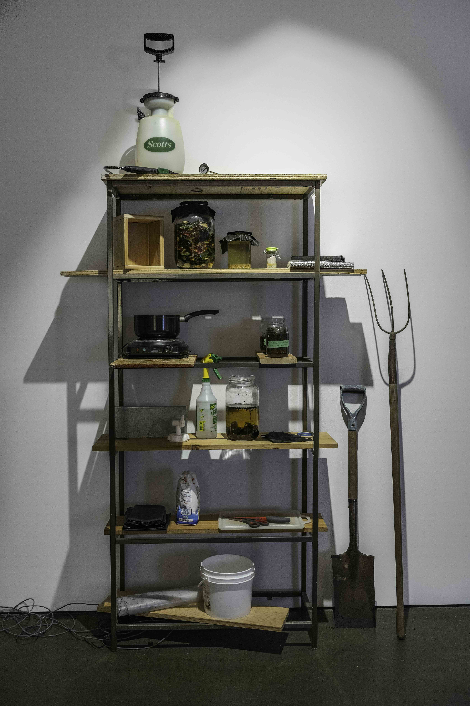

terraformations, Produit Rien, Montréal, 2025.

© photo : Paul Litherland
FR
terraformations met l’accent sur la troublante vitalité des matières mourantes et des communautés vibrantes qui s’y déploient. Des réseaux de mycélium prolifèrent dans la pénombre; des bactéries exhalent des odeurs âcres, sucrées et terreuses; des vers à compost bruissent; la chaleur s’intensifie; les fibres se dissolvent. Le tout, réuni en un système éphémère, à la fois mort et vivant, ouvert aux impondérables. Le temps d’une visite, l'exposition nous invite à s’imprégner de la présence des agents décomposeurs et peut-être, à réimaginer leur place dans le monde construit.
ENG
terraformations draws our attention to the unsettling vitality of dying matter and the vibrant communities unfolding within. Mycelia proliferate in the half-light; bacteria exhale sweet, pungent, earthy odors; compost worms rustle; heat intensifies; fibers dissolve. An ephemeral system, both dead and alive, open to contingencies. This exhibition invites us to immerse ourselves in the presence and temporality of agents of decomposition, and perhaps, to re-imagine their place in the human-built world.










NOTE SUR LE COMPOST
Depuis plusieurs années, j’explore une pratique du compost. Je m’intéresse aux manières dont le compostage ravive des liens entre les morts et les vivants, par des collaborations interespèces entre humains, bactéries, champignons et nombre d’autres décomposeurs. Les œuvres que je développe impliquent matériellement ces communautés de la pourriture. Elles cherchent à creuser en-deçà de l’abjection et du dégoût pour transformer notre relation à ces êtres infimes — et pourtant indispensables à notre survie.
NOTE ON COMPOSTING
For several years, I have been exploring the practice of composting. I am drawn to the ways it rekindles bonds between the dead and the living, through interspecies collaborations among humans, bacteria, fungi, and countless other decomposers. The works I develop materially engage with these communities of decay. They dig beneath layers of abjection and disgust, in order to transform our relationship with these tiny beings — so often overlooked, yet essential to our survival.